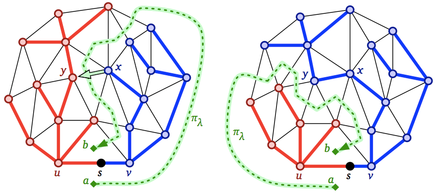
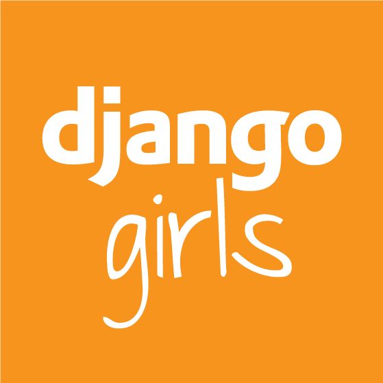
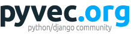

Proč jsme tu?
PyLadies
PyLadies je mezinárodní skupina lidí,
kteří se snaží zapojit ženy do komunity
kolem programovacího jazyka Python.
Proč?
PyLadies u nás

2012: Django workshop na konferenci
PyLadies u nás

2012: Lynn Root na Pyvu
2013

2014
2015

V Brně i Praze
2016
2017
V Brně, Praze, Ostravě
Na co se můžete těšit
Základy programování
Proměnné, datové typy, podmínky, cykly, funkce, výjimky, moduly, ...
Dovednosti okolo
Příkazová řádka
Správa verzí
Spolupráce a Open-source
Hry

Co neočekávat
Toto není
kurz informatiky

podle Sergio Cabello and Erin W. Chambers. Multiple source shortest paths in a genus g graph. Proc. 18th Annual ACM-SIAM Symposium on Discrete Algorithms 89–97, 2007.
(Zdroj)
Toto není
webový workshop
PyLadies nejsou
kurz
Zapojte se!
Sledujte Facebookovou skupinu


Pomozte s organizací
Přijďte na Pyvo
Koučky a koučové
Ti, kteří se zapojili
Těžké problémy vyřeší
S lehčími problémy pomůžou
Nesahají na klávesnici
Jsou milí a trpěliví
Barevné papírky
Zelený: Mám hotovo!
Červený: Mám otázku nebo problém
Žlutý: Jméno
Poděkování

A teď k věci.
Programování
Programovat znamená přikazovat strojům, co mají dělat.
Textové rozhraní
Na zadávání příkazů je ale pořád ještě nejlepší prostý text.
Python
Programovací jazyk, který se tu naučíme.
Příkazová řádka
Způsob, jak zadávat textové příkazy
Zkuste si: Úvod do příkazové řádky